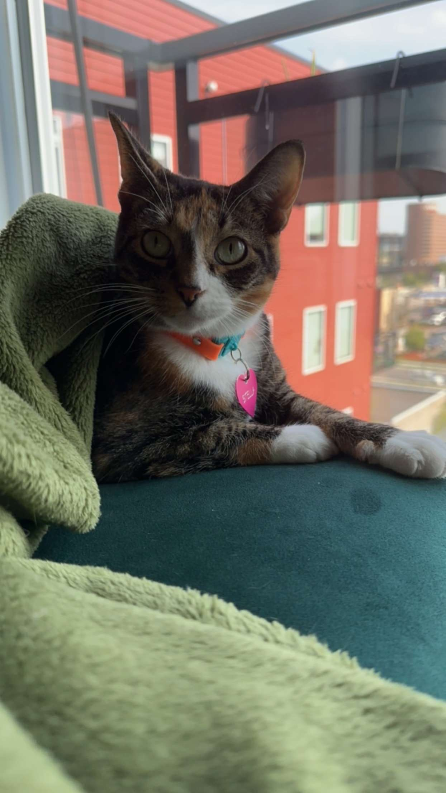
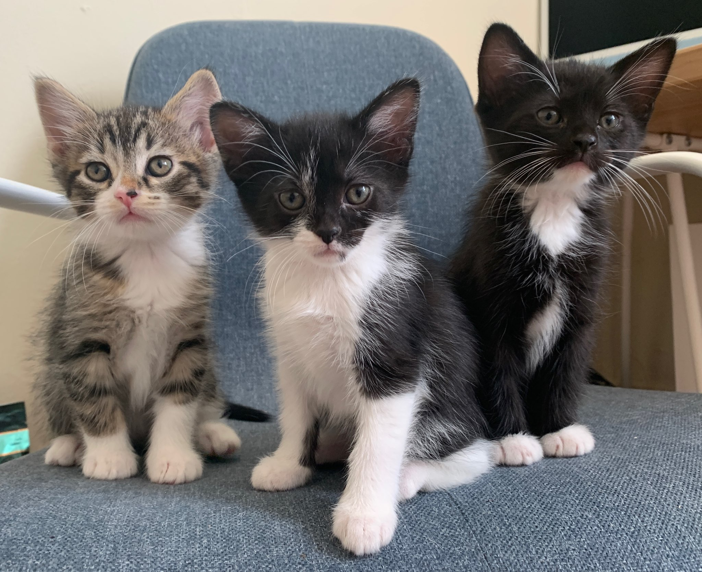
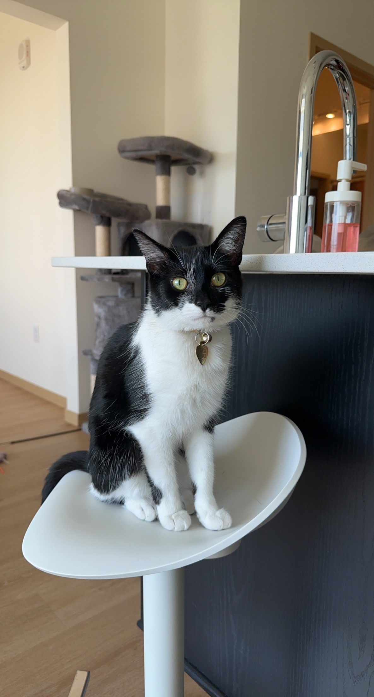

Howdy!
This page was made by Alexandrea.
This is a web page written with HTML! :)
Web programming is
FUN!
More on HTML at W3 Schools. It's a great resource!
This is Stella! I rescued her from behind a dumpster at a Kwik Trip in Wisconsin.
This is Riley! When I moved to Minneapolis, I rescued another cat from someone's backyard. I was told by multiple people that the cat was a boy, including a veterinarian. Turns out they were very wrong, Riley is a girl AND she was pregnant. I didn't find this out until I came home to 3 newborn kittens in my living room.

The next picture is Riley's 3 baby kittens. From left to right, their names are Leo, August Pepper, and Benny. All of them are still in the family. I kept August Pepper, my sister kept Leo, and my Aunt Mel has Benny.
The final picture is the baby I kept, August Pepper. She's a little over 2 years old, and sassier than ever.
| Fish | Habitat |
|---|---|
| Trout | River |
| Shark | Ocean |
| Walleye | Lakes |